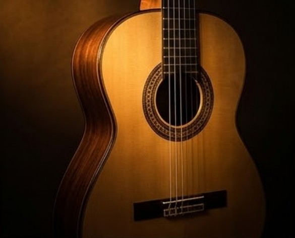

♪
Melodia & harmonia
A voz do soprano conduz o hino enquanto o acompanhamento harmônico segue por baixo, fiel à reverência original.
Coleção Partituras Sacras
Toque os hinos da congregação no violão sozinho: a melodia do soprano, os acordes e os baixos, tudo ao mesmo tempo, em tablatura clara e pronta para estudar.
PDF para baixar e imprimir · entrega pelo WhatsApp
Coleção Partituras Sacras
Versão Exclusiva Solo em Fingerstyle

Violão solo · Tablatura & Acordes
DIGITAHINOS FINGERSTYLE
O que é fingerstyle
Em vez de só acompanhar o canto, o violão toca a melodia do soprano e, ao mesmo tempo, os acordes e as linhas de baixo. Você louva e medita sem precisar de mais ninguém.
A voz do soprano conduz o hino enquanto o acompanhamento harmônico segue por baixo, fiel à reverência original.
Cada compasso traz o desenho exato do acorde acima da tablatura, para consulta rápida durante o estudo.
A tonalidade de cada hino foi adaptada para aproveitar cordas soltas e baixos, deixando a execução mais natural.
Veja por dentro
Toque numa partitura para ampliar. As imagens têm marca d'água; o PDF que você recebe vem completo e limpo.
Deslize para o lado para ver mais →
Escolha como levar
Todos os hinos do Hinário nº 5
R$
Escolha só os que você vai tocar
R$ por hino
Nenhum hino escolhido ainda.
Perguntas frequentes
Não. A tablatura mostra em qual corda e casa colocar os dedos, e o diagrama do acorde fica no topo de cada trecho.
Em PDF, um arquivo por hino (ou todos juntos na coleção completa). Você pode abrir no celular, no tablet ou imprimir.
Sim. Escolha o número de cada hino e o pedido já sai somado. Se o valor chegar perto do preço da coleção, avisamos que compensa levar tudo.
Não. Os arranjos usam a afinação padrão do violão (E A D G B e), com o tom de cada hino já adaptado para soar bem.
Os arranjos pedem alguma prática com os dedos da mão direita, mas foram escritos com digitação clara e prática. Olhe as amostras acima para avaliar.
Depois do Pix, envie o comprovante pelo WhatsApp e os PDFs são enviados para você.